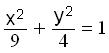
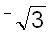
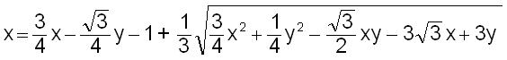

(eq.
4)
(eq.
4)Rotations with matrices
from the Japanese version of Don's book "Changing Shapes With Matrices"
Sueanne’s work below started with a 12-dot circle like this
We talked about starting on the right side as 0°, then going counterclockwise around the circle every 30° which she marked off. The she did every multiple of 45°; then every multiple of 15°, approximating these. I suggested we call the radius of the circle 1 unit. I drew the vertical line from the 30° point to the horizontal diameter and called that the sine of 30°. Sueanne did the rest. This is the rest of the story, in her words:
Sine Waves...by Sueanne, 10 years old, Jan. ’84
First I recorded the degrees of each point on the circle. Mr. Cohen showed me the sine
|
of 30. I saw some of these were the same and some were opposite:
sin x = sin x Sueanne’s first identity sin 60° = sin 120° sin 30° = -sin 330° sin 45° = -sin 315° sin 75° = -sin 285° sin 90° = -sin 270° sin 30° = sin 150° sin 15° = sin 165° sin 10° = sin 170° = sin(180°-10°) sin 5° = sin(180°- 5°) sin A = sin(180°- A) Sueanne’s 2nd identity |
Then I used ratios to figure out the sines (the length of line at 30°, say divided by the length of the radius, so 23mm/46 mm = .5, the sine of 30°=.5) and checked it on my calculator and recorded them on a chart:
|
x sin of x x+60 sin(x+60) 0 0.00 60 0.87 30 0.50 90 1.00 60 0.87 120 0.87 90 1.00 150 0.50 120 0.87 180 0.00 150 0.50 210 - 0.50 180 0.00 240 - 0.87 210 - 0.50 270 - 1.00 240 - 0.87 300 - 0.87 270 - 1.00 330 - 0.50 300 - 0.87 360 0.00 330 - 0.50 390 0.50 360 0.00 420 0.87 |
Using graph paper (see next page) I took the degrees and their sines and charted a sine wave (in blue). The degrees were x and the sine was y. The equation is y = sin x To shift the sine wave 60° to the left, I added 60 to the number of degrees which stood for x and wrote the sine of the new number next to it. Those numbers were charted on the graph paper. Equation: y= sin(x+60), (in black). To shift 60° to the right, subtract 60° from the number of degrees, figure out the sine of the new number and chart it on the graph. Equation: Y= sin(x-60) (in brown). Y=2(sin x) is in red and Y= sin(2x) is in green. |
Below is Sadie’s graph, similar to Sueanne’s but a couple more and in color.
Notice:
Look at this simple pattern; it’s really easy to remember. You do want to memorize and know these values of the sine as decimals and in radical form.
Sueanne didn’t write about the cosine, but she worked on that next. To get the cosine, just find the lengths of the horizontal segments drawn to the vertical diameter as shown in the diagram below. The cosine of 30°, written as cos 30° and cos 60° are shown below. The word cosine comes from the word complement , which means two angles that add up to 90°. So cos 30° = sin 60° = 0.87 . By definition, the cosine is negative between 90° and 270°, and positive between 270° and 90°.
The values of the sine and cosine for arcs or angles from 0° to 360° are shown below:
x sin x cos x
0 0 1
30 ½ = .5 = .87
45 / 2 = .71 / 2 = .71
60 = .87 ½ = 0.5
90 1 0
120 = .87 ½ = -.5
135 / 2 = .71 -/ 2 = -.71
150 ½ = .5 -= -.87
180 0 -1
210 - ½ = -.5 -= -.87
225 -/ 2 = -.71 -/ 2 = -.71
240 -= -.87 - ½ = -.5
270 - 1 0
300 -= -.87 ½ = .5
315 -/ 2 = -.71 / 2 = .71
330 - ½ = -.5 = .87
360 0 1
So the value of the sine starts at 0 when the arc is 0°, and increases to 1 at 90° while the value of the cosine starts at 1 when the arc is 0°, and decreases to 0 at 90°.
Now let’s look at the 90° ccw rotation matrix we found to be , # 25, in the list of 81. Since the cos 90° = 0 and the sin 90° = 1 , we can write the matrix above as .
We’ll graph the ellipse with the equation  . We’ll use 4 points on this ellipse, then we’ll rotate the ellipse 90° ccw using the matrices to do that. I first solved the equation of the ellipse for y, getting y= ±. Using the positive values I got these 4 points on the ellipse (putting x = 3, 2, 1, then 0):
To rotate the ellipse, using these 4 points, I used the rotating matrix on each point:
Another way to write this is .
Then put in the values of x. The graphs before and after the 90° ccw rotation look like this:
(I graphed the ellipses in Mathematica, then I copied them into my paint program where I plotted the points).
Generalizing for any point rotated 90° ccw, we can write .
Notice what the 90° ccw rotation does to the coordinates!
Now generalizing a ccw rotation of any number of degrees q, we get
We’ll use the bolded x and y to represent the new x and new y.
The results can be written as
NEW x = OLD x * cos q - OLD y * sin q and
NEW y = OLD x * sin q + OLD y * cos q
These are called the rotation equations.
Now for a rotation of 30° ccw, say, we can write the matrix as:
Let’s rotate the parabola with equation y = x2 , 30° ccw. We’ll take the 5 points on this parabola (-2, 4), (-1, 1) (0, 0), (1, 1), and (2, 4). then we’ll rotate the parabola 30° ccw using the matrices to do that. Using the values of cos 30°= = .866 and the
sin 30°= .5, I figured out the 5 new points on the rotated parabola.
The original parabola with equation y = x2 and this parabola rotated 30° ccw looks like this:
To get the new x and new y, using x2 in for y,
So we get
x = x cos 30° - x2 sin 30° and
y = x sin 30° + x2 cos 30°
Suppose we wanted to get the equation for the new parabola, how would we do that?
Since cos 30° = » .866 and sin 30° = ½ = .5, these equations become
x = * x - ½* x2 (eq.1)
y = ½* x +* x2 (eq. 2)
Now we can solve these 2 equations for one equation in terms of x and y.
We’ll eliminate the x2 terms first. We’ll multiply (eq.1) by,
x = *x - *x2 then add this to (eq.2)
y = ½x + x2 (eq.2)
obtaining
x + y = 2x
Solving this equation for the old x, we get the old x in terms of the new x and new y.
x = x + ½ y
Now we’ll take the right side of this and substitute it in for x in (eq.1).
x = * x - ½* x2 (eq.1)
x = ( x + ½*y ) - ½(* x + ½* y) 2
Using the distributive property in the first term and squaring in the second term,
x = *x + *y - ½(*x2 + *xy + 1/4*y 2 )
Using the distributive property in the second term, we get
x = x + *y - 3/8*x2 - *xy - 1/8*y 2
Multiplying both sides of this equation by 8, we can get rid of the fractions:
8x = 6x + 2y - 3x2 - 2xy - y 2 . Simplifying this equation,
3x 2 + 2xy + y 2 + 2x - 2y = 0
which is the equation of the parabola y = x2 rotated 30° ccw. Below is the command in Mathematica to plot these 2 equations:
ImplicitPlot[{x^2==y,3*x^2+2*Sqrt[3]*x*y+y^2+2*x-2*Sqrt[3]*y==0},
{x,-2,2},AspectRatio->Automatic]
Let’s rotate the hyperbola with equation , 30° cw. We’ll take the 4 points on this parabola (-1.24, 0), (0, -2), (6, -2), and (7.24, 0). then we’ll rotate the hyperbola 30° cw using the matrices to do that. Since sin(-30) = -sin 30 and cos (-30) = cos 30, I used the values of cos 30°= = .866 and the sin 30°= .5, to figure out the 4 new points on the rotated hyperbola using the rotation matrix .
The graphs before and after the 30° cw rotation look like this:
equation after rotation
We’ll find the equation of the rotated graph now.
Solving the original equation for y,
add and -1 to both sides
multiplying both sides by 4
rewrite 4 as
add fractions
factor out 4 on top
take the square root of both sides
take the square root of 4/9 = 2/3
add -2 to both sides
simplify under the radical
And we’ll use the positive root in the work below
The rotation equations would be written as (the new x and new y are enlarged and bolded):
(eq. 1) x = x cos 30° + y sin 30° =
(eq. 2) y = -x sin 30° + y cos 30° =
(Remember cos 30° = and sin 30° = 1/2)
Putting the right side of in for y in (eq. 1) and (eq. 2),
x =and
y = , simplifying
x = (eq. 3) and
y
= (eq.
4)
Now we’ll solve (eq. 3) and (eq. 4) for x and y in terms of the new x and new y. It would help to get rid of the radicals in these 2 equations, so we’ll multiply (eq. 3) by  then add that to (eq. 4).
x =
y = . Adding these, we get
x + y = -2x and solving for x we get
(eq.5) x = x + y . Now put this value of x, the right side of eq. 5, in for the x in (eq. 3) above. All the x’s and y’s below, are the new x’s and and new y’s.
Using the distributive property and simplifying,

Getting just the radical on the right side of the equation:
Now squaring both sides, we obtain
Squaring on the left side (remember ) and using the distributive property on the right side, gives
Multiplying by 144 and simplifying we get finally (it took 3 tries and about 6 hours by hand to get this- it’s easy to make mistakes here!):
|
|
which is the equation of the hyperbola rotated 30° cw. Notice below, that corresponding points on these graphs are rotated 30° about the origin.
You might want to try some of these rotations yourself.
Try one where the rotation is about a point other than the origin!